Историја
Место окупирано миленијумима, обележено староседелачким народима и модерним истраживањима.
Аутохтони народи
Пуеблоанс
Села, пољопривреда, грнчарија, станови у литицама.
Хопи
Један од најстаријих народа, традиције и митови везани за кањон.
Хавасупаи
Смештени у долинама, познати по својим усевима и баштама.
Навахо
Стигли касније, важна духовна територија.
Долазак Европљана
1540 : експедиција Карденас
Послат од стране Шпаније, Гарсија Лопез де Карденас стиже до јужног руба кањона. Његова група открива огромност локалитета, али не успева да се спусти. Он је први познати Европљанин који га је посматрао.
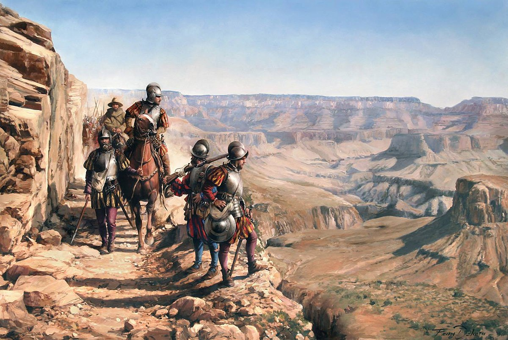19. век : истраживања и прегледи
У 19. веку војници, истраживачи и научници прелазили су регион. Направили су прва истраживања кањона, упркос опасностима и недостатку путева. Сајт је почео да се прецизно мапира.
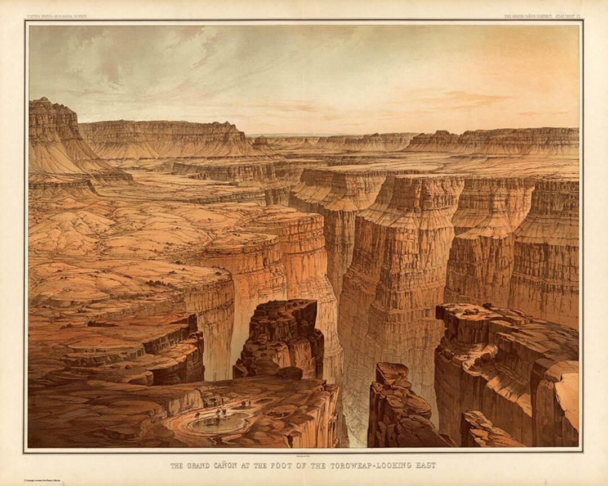1869 : експедиција Џона Веслија Пауела
Године 1869. Џон Весли Пауел је водио спуст реком Колорадо са девет људи. Кретали су се непознатим брзацима и прикупљали битне податке. Ова експедиција је постала прво научно истраживање кањона.
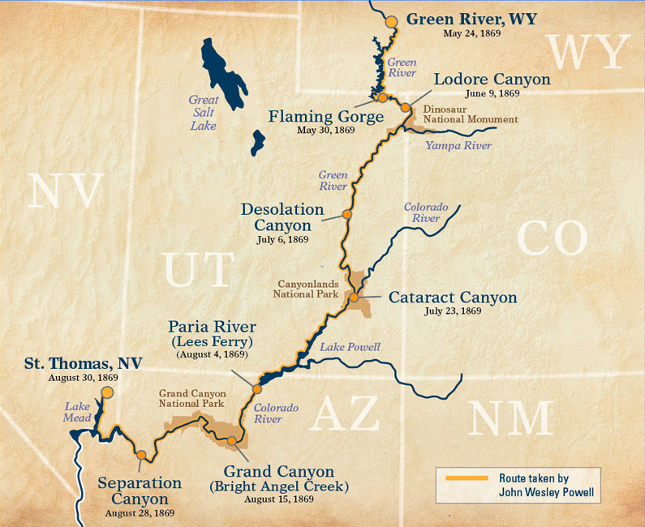Заштићено место
 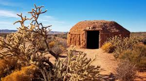
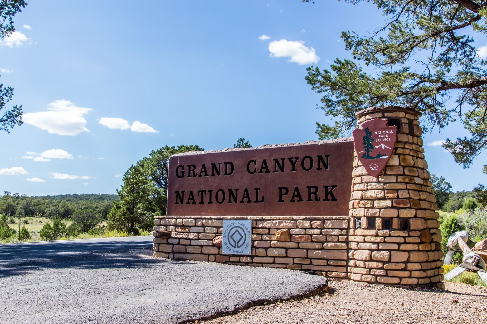
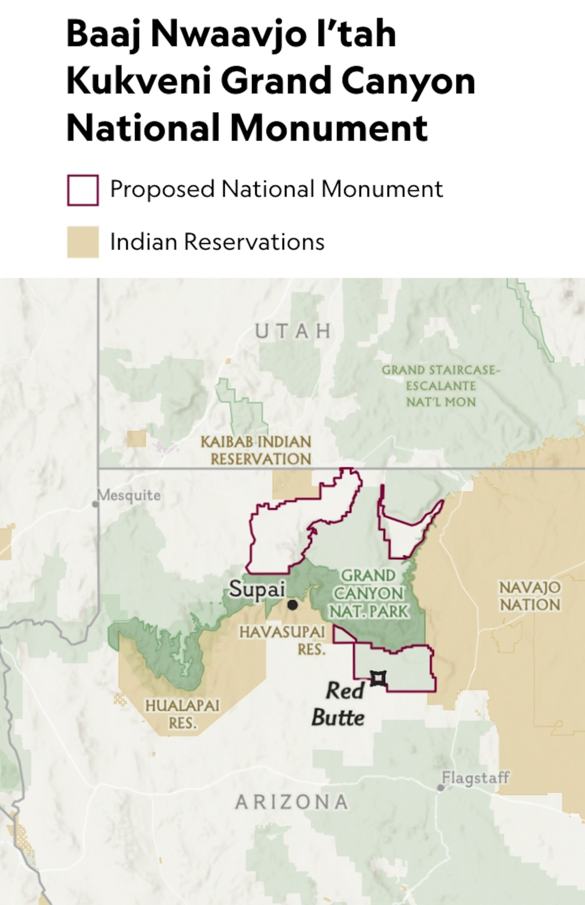
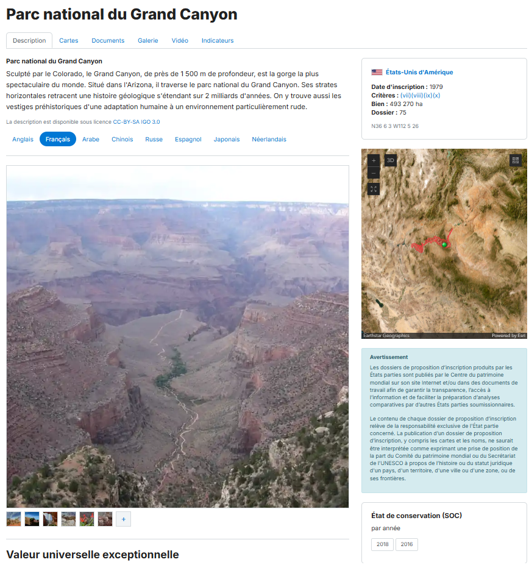
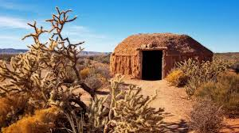
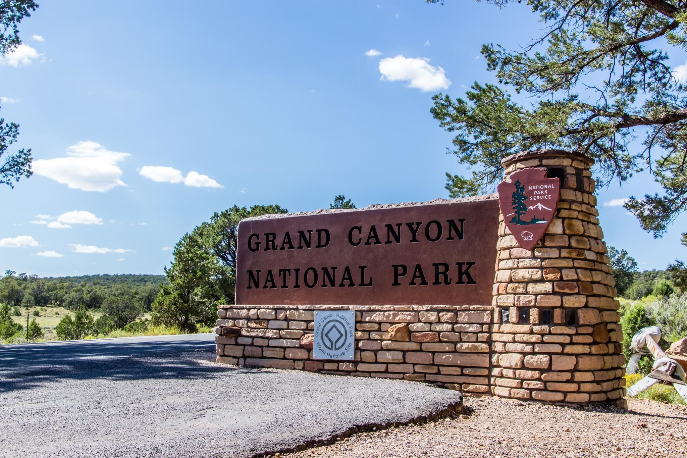
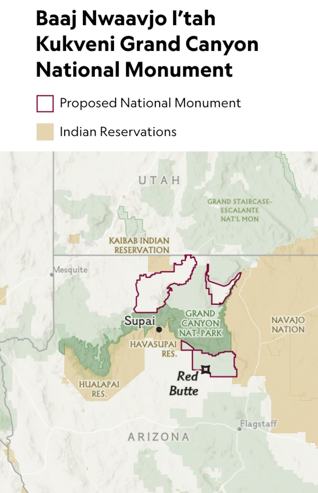
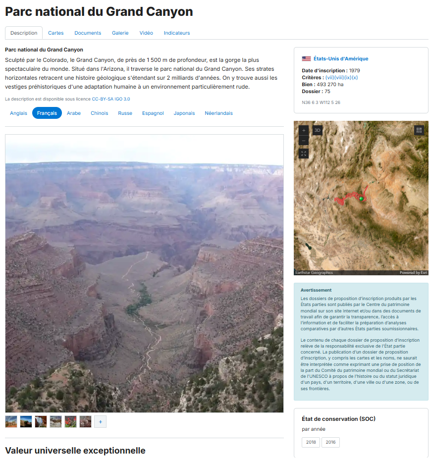
Велики кањон, познат по својој изузетној универзалној вредности, представља велико природно и културно наслеђе. Његова историја, пејзажи и традиција староседелачких народа чине га незаменљивим местом. УНЕСКО ради на очувању овог јединственог места за будуће генерације.